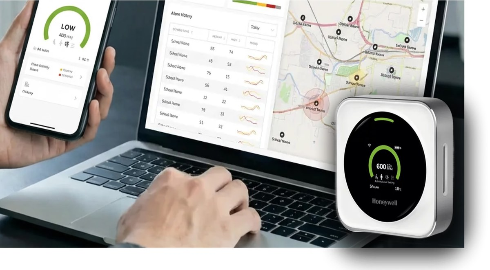
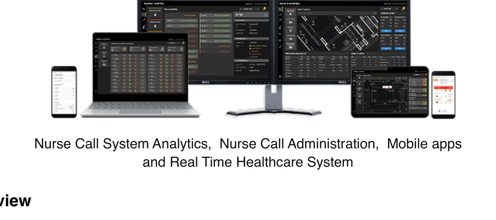
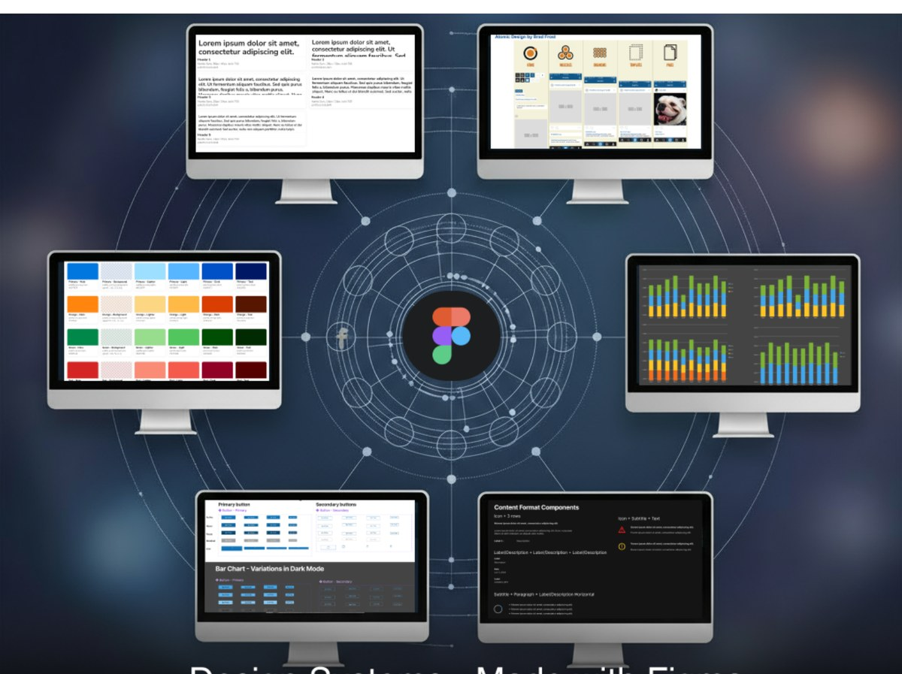

Matt McGlothlin · Designer & Design Systems Leader · Charlotte, NC
Design is
Everything.
great design is invisible
I help enterprises and startups ship engaging products through design systems, UX, and AI — from Fortune 100 scale to founder scrappy.
Request recent workTransmission Risk Air Monitor
From data to decisions: designing for breathable air. An award-winning air quality experience that helps schools and public spaces turn complex algorithmic risk assessments into clear, actionable guidance.
View case study

Selected Work


About
I'm Matt, a designer & design‑systems leader based in Charlotte.
I've shipped work for Fortune 100 giants and scrappy startups alike — and founded a few companies of my own along the way. My current passion: design systems and automation that keep enterprise interfaces consistent.
More about meiF Design Award 2022
Honeywell Transmission Risk Air Monitor
→Trusted at scale
- Bank of America
- Honeywell
- Wells Fargo
- ecomdash
Have a project? Let's talk.
mattmcg@bitfliptech.com